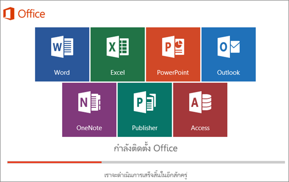

์
สอนการติดตั้งโปรแกรม Microsoft Excel
จะเป็นการสอนการติดตั้ง Microsoft 365
-
ไปที่ แดชบอร์ดบัญชี Microsoft ของคุณ และถ้าคุณยังไม่ได้ลงชื่อเข้าใช้ ให้เลือก ลงชื่อเข้าใช้
-
ลงชื่อเข้าใช้ด้วย บัญชี Microsoft ที่คุณได้เชื่อมโยงกับ Microsoft 365 เวอร์ชันนี้
ลืมรายละเอียดบัญชีของคุณใช่ไหม ดู ฉันลืมบัญชีที่ฉันใช้กับ Office
-
จากหน้า ภาพรวม ให้เลือก แอป Office และบนหน้านั้น ให้ค้นหาผลิตภัณฑ์ Microsoft 365 ที่คุณต้องการติดตั้ง แล้วเลือก ติดตั้ง
เมื่อต้องการติดตั้ง Microsoft 365 ในภาษาอื่น หรือติดตั้ง เวอร์ชัน 64 บิต ให้ใช้ดรอปดาวน์เพื่อค้นหาตัวเลือกเพิ่มเติม เลือกภาษาและเวอร์ชันบิตที่คุณต้องการ แล้วเลือก ติดตั้ง
ตอนนี้คุณพร้อมสำหรับการติดตั้ง Microsoft 365 แล้ว เลือกแท็บด้านล่างสำหรับเวอร์ชันที่คุณกำลังพยายามติดตั้ง
ติดตั้ง Microsoft 365 2019 หรือ 2016 บนพีซี
โปรดจําไว้ว่า Microsoft 365แบบซื้อครั้งเดียวเป็น สิทธิ์การใช้งานสําหรับการติดตั้งเพียงครั้งเดียว
-
ขึ้นอยู่กับเบราว์เซอร์ของคุณ ให้เลือก เปิดไฟล์ (ใน Edge หรือ Internet Explorer) ตั้งค่า (ใน Chrome) หรือ บันทึกไฟล์ (ใน Firefox)
ถ้าคุณเห็นการแจ้งเตือนของส่วนควบคุมบัญชีผู้ใช้ที่ระบุว่า คุณต้องการอนุญาตให้โปรแกรมนี้ทำการเปลี่ยนแปลงอุปกรณ์ของคุณหรือไม่ เลือก ใช่.
เริ่มการติดตั้ง

-
การติดตั้งจะเสร็จสิ้นเมื่อคุณเห็นข้อความ "เสร็จเรียบร้อย! ติดตั้ง Office แล้วในขณะนี้" และภาพเคลื่อนไหวจะเล่นเพื่อแสดงให้คุณเห็นว่าจะหาแอปพลิเคชัน Office ในคอมพิวเตอร์ของคุณได้จากที่ใด เลือก ปิด
ทําตามคําแนะนําในหน้าต่างเพื่อค้นหาแอป Microsoft 365 ของคุณ ตัวอย่างเช่น ขึ้นอยู่กับเวอร์ชันของ Windows ให้เลือก เริ่มต้น แล้วเลื่อนเพื่อค้นหาแอปที่คุณต้องการเปิด เช่น Excel หรือ Word หรือพิมพ์ชื่อของแอปในกล่องค้นหา
พบปัญหาในการติดตั้งหรือการลงชื่อเข้าใช้หรือไม่
ถ้าคุณไม่สามารถติดตั้ง Microsoft 365ได้ ให้ดู แก้ไขปัญหาการติดตั้ง Office สําหรับความช่วยเหลือเพิ่มเติม
เปิดใช้งานMicrosoft 365
-
เริ่มใช้แอปพลิเคชัน Microsoft 365 ทันทีโดยการเปิดแอปใด ๆ เช่น Word หรือ Excelไม่พบ Office หลังจากติดตั้งใช่หรือไม่
ในกรณีส่วนใหญ่ Microsoft 365 จะเปิดใช้งานเมื่อคุณเริ่มแอปพลิเคชัน และหลังจากที่คุณยอมรับเงื่อนไขการอนุญาตให้ใช้สิทธิโดยการเลือก ยอมรับ
-
Office อาจเปิดใช้งานโดยอัตโนมัติ อย่างไรก็ตาม คุณอาจเห็นตัวช่วยสร้างการเปิดใช้งาน Microsoft Office ขึ้นอยู่กับผลิตภัณฑ์ของคุณ ถ้าเป็นเช่นนั้น ให้ทําตามพร้อมท์เพื่อเปิดใช้งาน Microsoft 365
ถ้าคุณต้องการความช่วยเหลือในการเปิดใช้งาน ให้ดู เปิดใช้งาน Office